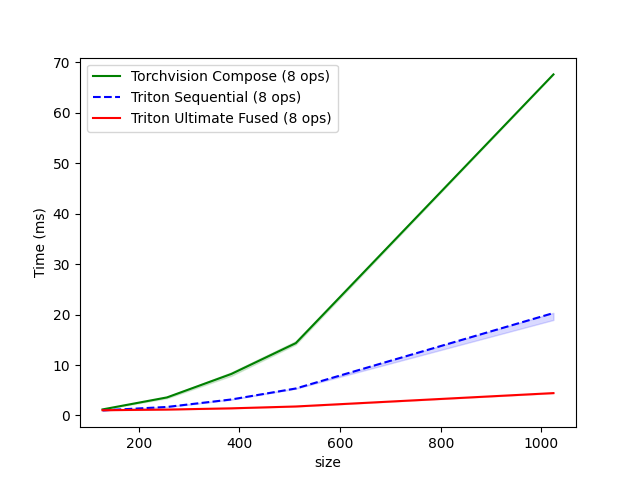

Triton-Augment¶
GPU-Accelerated Image Augmentation with Kernel Fusion


Triton-Augment is a high-performance image augmentation library that leverages OpenAI Triton to fuse common transform operations, providing significant speedups over standard PyTorch implementations.
⚡ 5 - 12x Faster than Torchvision on typical training augmentation¶
Replace your augmentation pipeline with a single fused kernel and get:
-
8.1x average speedup on Tesla T4 (Google Colab free tier)
-
Up to 12x faster on large images (1280×1280)
Key Idea: Fuse multiple GPU operations into a single kernel → eliminate intermediate memory transfers → faster augmentation.
# Traditional (torchvision Compose): 7 kernel launches
crop → flip → brightness → contrast → saturation → grayscale → normalize
# Triton-Augment Ultimate Fusion: 1 kernel launch 🚀
[crop + flip + brightness + contrast + saturation + grayscale + normalize]
🚀 Features¶
- One Kernel, All Operations: Fuse crop, flip, color jitter, grayscale, and normalize in a single kernel - significantly faster, scales with image size! 🚀
- Different Parameters Per Sample: Each image in batch gets different random augmentations (not just batch-wide)
- Zero Memory Overhead: No intermediate buffers between operations
- Drop-in Replacement: torchvision-like transforms & functional APIs, easy migration
- Auto-Tuning: Optional performance optimization for your GPU
- Float16 Ready: ~1.3x speedup on large images + 50% memory savings
📦 Quick Start¶
Installation¶
Requirements: Python 3.8+, PyTorch 2.0+, CUDA-capable GPU
Try it now:  - Test correctness and run benchmarks without local setup
- Test correctness and run benchmarks without local setup
Note: Colab is a shared service - performance may vary due to GPU allocation and resource contention. For stable benchmarking, use a dedicated GPU.
Basic Usage¶
Recommended: Ultimate Fusion 🚀
import torch
import triton_augment as ta
# Create batch of images on GPU
images = torch.rand(32, 3, 224, 224, device='cuda')
# Replace torchvision Compose (7 kernel launches)
# With Triton-Augment (1 kernel launch - significantly faster!)
transform = ta.TritonFusedAugment(
crop_size=112,
horizontal_flip_p=0.5,
brightness=0.2,
contrast=0.2,
saturation=0.2,
random_grayscale_p=0.1,
mean=(0.485, 0.456, 0.406),
std=(0.229, 0.224, 0.225)
)
augmented = transform(images) # 🚀 Single kernel for entire pipeline!
Need only some operations? Set unused parameters to their default values:
# Example: Only saturation adjustment + normalization
transform = ta.TritonFusedAugment(
crop_size=224, # No crop (same size as input)
brightness=0.0, # No brightness change
contrast=0.0, # No contrast change (default)
saturation=0.2, # Only saturation jitter
horizontal_flip_p=0.0, # No flip
mean=(0.485, 0.456, 0.406),
std=(0.229, 0.224, 0.225)
)
Specialized APIs: For convenience, also available: TritonColorJitterNormalize, TritonRandomCropFlip, etc.
🔗 Combine with Torchvision Transforms¶
For operations not yet supported by Triton-Augment (like rotation, perspective transforms, etc.), combine with torchvision transforms:
import torchvision.transforms.v2 as transforms
# Triton-Augment + Torchvision (per-image randomness + unsupported ops)
transform = transforms.Compose([
transforms.RandomRotation(degrees=15), # Torchvision (no per-image randomness)
ta.TritonColorJitterNormalize( # Triton-Augment (per-image randomness)
brightness=0.2, contrast=0.2, saturation=0.2,
mean=(0.485, 0.456, 0.406), std=(0.229, 0.224, 0.225)
)
])
Note: Torchvision transforms.v2 apply the same random parameters to all images in a batch, while Triton-Augment provides true per-image randomness. Kornia also supports per-image randomness.
⚠️ Input Requirements¶
- Range: Images must be in
[0, 1]range (e.g., usetorchvision.transforms.ToTensor()) - Device: GPU (CUDA) - CPU tensors automatically moved to GPU
- Shape:
(C, H, W)or(N, C, H, W)- 3D tensors automatically batched - Dtype:
float32orfloat16
📚 Documentation¶
Full documentation: Navigation menu on the left (or see GitHub repo docs/ folder)
| Guide | Description |
|---|---|
| Quick Start | Get started in 5 minutes with examples |
| Installation | Setup and requirements |
| API Reference | Complete API documentation for all functions and classes |
| Contrast Notes | Fused kernel uses fast contrast (different from torchvision). See how to get exact torchvision results |
| Auto-Tuning | Optional performance optimization for your GPU and data size (disabled by default). Includes cache warm-up guide |
| Batch Behavior | Different parameters per sample (default) vs batch-wide parameters. Understanding same_on_batch flag |
| Float16 Support | Use half-precision for ~1.3x speedup (large images) and 50% memory savings |
| Comparison with Other Libraries | How Triton-Augment compares to DALI, Kornia, and when to use each |
⚡ Performance¶
📊 Run benchmarks yourself on Google Colab - Verify correctness and performance on free GPU
Note: Colab performance may vary due to shared resources
Benchmark Results¶
Real training scenario with random augmentations on Tesla T4 (Google Colab Free Tier):
| Image Size | Batch | Crop Size | Torchvision | Triton Fused | Speedup |
|---|---|---|---|---|---|
| 256×256 | 32 | 224×224 | 2.48 ms | 0.56 ms | 4.5x |
| 256×256 | 64 | 224×224 | 4.51 ms | 0.69 ms | 6.5x |
| 600×600 | 32 | 512×512 | 11.82 ms | 1.26 ms | 9.4x |
| 1280×1280 | 32 | 1024×1024 | 48.91 ms | 4.07 ms | 12.0x |
Average Speedup: 8.1x 🚀
Operations: RandomCrop + RandomHorizontalFlip + ColorJitter + RandomGrayscale + Normalize
Note: Benchmarks use
torchvision.transforms.v2(not the legacy v1 API) for comparison.
Performance scales with image size — larger images benefit more from kernel fusion:

📊 Additional Benchmarks (NVIDIA A100 on Google Colab):
| Image Size | Batch | Crop Size | Torchvision | Triton Fused | Speedup |
|---|---|---|---|---|---|
| 256×256 | 32 | 224×224 | 0.61 ms | 0.44 ms | 1.4x |
| 256×256 | 64 | 224×224 | 0.93 ms | 0.43 ms | 2.1x |
| 600×600 | 32 | 512×512 | 2.19 ms | 0.50 ms | 4.4x |
| 1280×1280 | 32 | 1024×1024 | 8.23 ms | 0.94 ms | 8.7x |
Average: 4.1x
Why better speedup on T4? Kernel fusion reduces memory bandwidth bottlenecks, which matters more on bandwidth-limited GPUs like T4 (320 GB/s) vs A100 (1,555 GB/s). This means greater benefits on consumer and mid-range hardware.
Run Your Own Benchmarks¶
Quick Benchmark (Ultimate Fusion only):
Detailed Benchmark (All operations):
💡 Auto-Tuning¶
All benchmark results shown above use default kernel configurations. Auto-tuning can provide additional speedup on dedicated GPUs.
What is Auto-Tuning?
Triton kernels have tunable parameters (block sizes, warps per thread, etc.) that affect performance. Auto-tuning automatically searches for the optimal configuration for your specific GPU and data sizes.
When to use:
-
✅ Dedicated GPUs (local workstations, cloud instances): 10-30% additional speedup
-
⚠️ Shared services (Colab, Kaggle): Limited benefits, but can help stabilize performance
Quick start:
import triton_augment as ta
ta.set_autotune(True) # Enable auto-tuning (one-time cost, results cached)
transform = ta.TritonFusedAugment(...)
augmented = transform(images) # First run: tests configs; subsequent: uses cache
⚠️ Performance Variability: Our highly optimized kernels are more sensitive to resource contention. If you experience sudden latency spikes on shared services, this is expected due to competing workloads. Auto-tuning can help find more stable configurations.
📖 Full guide: Auto-Tuning Guide - Detailed instructions, cache management, and warm-up strategies
🎯 When to Use Triton-Augment?¶
Use Triton-Augment + Torchvision together:
- Torchvision: Data loading, resize, ToTensor, rotation, affine, etc.
- Triton-Augment: Replace supported operations (currently: crop, flip, color jitter, grayscale, normalize; more coming) with fused GPU kernels
Best speedup when:
- Large images (500x500+) or large batches
- Data augmentations are your bottleneck
Stick with Torchvision only if:
- CPU-only training
- Experiencing extreme latency variability on shared services (e.g., consistent 10x+ spikes) - our optimized kernels are more sensitive to resource contention. Try auto-tuning first; if instability persists, Torchvision may be more stable
💡 TL;DR: Use both! Triton-Augment replaces Torchvision's fusible ops for 8-12x speedup.
🎓 Training Integration¶
Want to use Triton-Augment in your training pipeline? See the Quick Start Guide for:
- Complete training examples (MNIST, CIFAR-10)
- DataLoader integration patterns
- Best practices for CPU data loading + GPU augmentation
- Why this architecture is fast
Quick snippet:
# Step 1: Load data on CPU with workers
train_loader = DataLoader(..., num_workers=4)
# Step 2: Create GPU augmentation (once)
augment = ta.TritonFusedAugment(crop_size=28, ...)
# Step 3: Apply in training loop on GPU batches
for images, labels in train_loader:
images = images.cuda()
images = augment(images) # 🚀 1 kernel for all ops!
outputs = model(images)
📋 Roadmap¶
- [x] Phase 1: Fused color operations (brightness, contrast, saturation, normalize)
- [x] Phase 1.5: Grayscale, float16 support, auto-tuning
- [x] Phase 2: Basic Geometric operations (crop, flip) + Ultimate fusion 🚀
- [ ] Phase 3: Extended operations (resize, rotation, blur, erasing, mixup, etc.)
- [ ] Future: Differentiable augmentation (autograd support, available in Kornia) - evaluate demand vs performance tradeoff
🤝 Contributing¶
Contributions welcome! Please see CONTRIBUTING.md for guidelines.
# Development setup
pip install -e ".[dev]"
# Useful commands
make help # Show all available commands
make test # Run tests
📝 License¶
Apache License 2.0 - see LICENSE file.
🙏 Acknowledgments¶
- OpenAI Triton - GPU programming framework
- PyTorch - Deep learning foundation
- torchvision - API inspiration
👤 Author¶
Yuhe Zhang
- 💼 LinkedIn: Yuhe Zhang
- 📧 Email: yuhezhang.zju@gmail.com
Research interests: Applied ML, Computer Vision, Efficient Deep Learning, GPU Acceleration
📧 Project¶
- Issues and feature requests: GitHub Issues
- PyPI Package: pypi.org/project/triton-augment
⭐ If you find this library useful, please consider starring the repo! ⭐